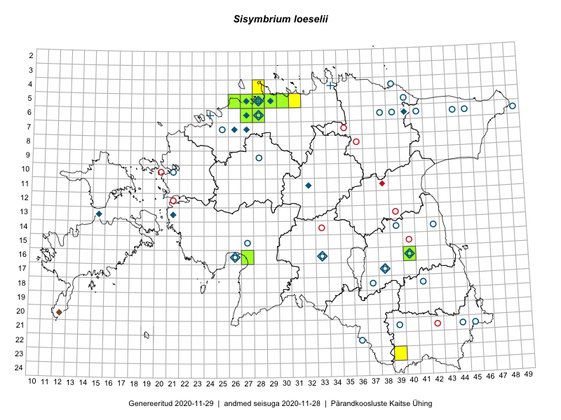

Sisymbrium loeselii — karvane unilook
Brassicaceae :: Sisymbrium loeselii L. (109)

Kaart põhineb 110 kirjel:
vaatlusi 35
herbaareksemplare 74
ELFi kirjeid1 1
Taime kaasaegsed ja ajaloolised leiukohad asuvad 44 ruudus.
Tingmärgid ja ruutude arvud periooditi (U2 / V3 )
█ 2006–2020 (16/–)
◆/◇ 1971–2005 (13/16)
○ 1921–1970 (23/28)
+ kuni 1920 (3/1)
× hävinud (–/0)
? kaheldav (–/0)
| Ruut | Leidja(d) | Leiuaeg | Kirje |
|---|---|---|---|
| 11-32 | Vilma Kuusk | 1974-08-26 | ruut/ala: Sisymbrium loeselii L. |
| 06-40 | L. Laasimer, M. Leht | 1982-07-21 | ruut/ala: Sisymbrium loeselii L. |
| 07-27 | L. Viljasoo, T. Kull, M. Leht | 1986-07-21 | ruut/ala: Sisymbrium loeselii L. |
| 16-40 | Linda Viljasoo, Maret Kask, A. Remmel | 1947–1981 | ruut/ala: Sisymbrium loeselii L. |
| 16-40 | Maret Kask, Linda Viljasoo | 1983-05-18 | ruut/ala: Sisymbrium loeselii L. |
| 16-40 | Maret Kask | 1979-08-28 | ruut/ala: Sisymbrium loeselii L. |
| 16-26 | T. Kukk | 1998-07-03–1998-07-08 | ruut/ala: Sisymbrium loeselii L. |
| 16-33 | botaaniline ekspeditsioon ZBI | 1983-06-20 | ruut/ala: Sisymbrium loeselii L. |
| 16-33 | 1957–1983 | ruut/ala: Sisymbrium loeselii L. | |
| 05-28 | H. Aasamaa, Tõnu Ploompuu | 1988 | ruut/ala: Sisymbrium loeselii L. |
| 07-26 | Linda Viljasoo, Malle Leht | 1986-07-18 | ruut/ala: Sisymbrium loeselii L. |
| 06-28 | Toomas Kukk | 2000-08-03 | ruut/ala: Sisymbrium loeselii L. |
| 05-28 | Erkki Otsman, Sergei Smirnov | 2015-06-26–2015-06-30 | ruut/ala: Sisymbrium loeselii L. |
| 05-29 | Peedu Saar, Sander Laherand | 2013-07-07 | ruut/ala: Sisymbrium loeselii L. |
| 10-27 | Aat Sarv | 2015-07-02 | ruut/ala: Sisymbrium loeselii L. |
| 06-27 | Tõnu Ploompuu | 2015-08-11 | ruut/ala: Sisymbrium loeselii L. |
| 06-28 | Tõnu Ploompuu | 2015-06-06 | ruut/ala: Sisymbrium loeselii L. |
| 06-28 | Toomas Kukk | 2016-06-06 | ruut/ala: Sisymbrium loeselii L. |
| 04-28 | Sander Laherand, Tõnu Ploompuu, Nele Jõessar | 2016-07-25 | ruut/ala: Sisymbrium loeselii L. |
| 05-31 | Sander Laherand, Toomas Kukk | 2016-08-30 | ruut/ala: Sisymbrium loeselii L. |
| 05-27 | Kadi-Liis Kesler | 2015-05-30 | ruut/ala: Sisymbrium loeselii L. |
| 06-27 | Tõnu Ploompuu | 2015-08-11 | ruut/ala: Sisymbrium loeselii L. |
| 05-27 | Toomas Kukk | 2017-06-22 | ruut/ala: Sisymbrium loeselii L. |
| 05-27 | Toomas Kukk | 2017-06-22 | ruut/ala: Sisymbrium loeselii L. |
| 05-27 | Toomas Kukk | 2017-06-22 | ruut/ala: Sisymbrium loeselii L. |
| 05-28 | Toomas Kukk | 2017-07-04 | ruut/ala: Sisymbrium loeselii L. |
| 20-37 | Eeva-Maria Jeletsky, Tarmo Niitla | 2015-08-11 | ruut/ala: Sisymbrium loeselii L. |
| 21-38 | Eeva-Maria Jeletsky, Tarmo Niitla | 2015-08-11 | ruut/ala: Sisymbrium loeselii L. |
| 11-38 | Eeva-Maria Jeletsky, Tarmo Niitla | 2016-06-09 | ruut/ala: Sisymbrium loeselii L. |
| 06-27 | Rein Kalamees | 2018-07-06 | ruut/ala: Sisymbrium loeselii L. |
| 16-40 | Rein Kalamees | 2018-07-13 | ruut/ala: Sisymbrium loeselii L. |
| 23-39 | Thea Kull | 2019-06-29 | ruut/ala: Sisymbrium loeselii L. |
| 05-28 | Meeli Mesipuu | 2019-06-26 | ruut/ala: Sisymbrium loeselii L. |
| 05-28 | Meeli Mesipuu | 2019-06-30 | ruut/ala: Sisymbrium loeselii L. |
| 05-27 | Ranno Puumets | 2019-08-26 | ruut/ala: Sisymbrium loeselii L. |
| 21-44 | Maret Kask | 1957-06-27 | TAA0031887: Sisymbrium loeselii L. |
| 16-40 | Heljo Krall | 2006-06-21 | TAA0031891: Sisymbrium loeselii L. |
| 18-37 | Visolde Puusepp | 1962-06-15 | TAA0031896: Sisymbrium loeselii L. |
| 18-41 | Maret Kask | 1960-06-17 | TAA0031897: Sisymbrium loeselii L. |
| 18-41 | Maret Kask | 1960-06-17 | TAA0031898: Sisymbrium loeselii L. |
| 04-39 | 1931-08-06 | TAA0031899: Sisymbrium loeselii L. | |
| 04-39 | 1931-08-06 | TAA0031900: Sisymbrium loeselii L. | |
| 21-39 | Maret Kask | 1957-08-07 | TAA0031906: Sisymbrium loeselii L. |
| 06-49 | Maret Kask | 1961-08-09 | TAA0031907: Sisymbrium loeselii L. |
| 06-44 | Vilma Kuusk | 1961-07-04 | TAA0031908: Sisymbrium loeselii L. |
| 06-41 | Agnes Ojaveer | 1963-06-14 | TAA0031909: Sisymbrium loeselii L. |
| 09-28 | Vilma Kuusk | 1959-05-28 | TAA0031911: Sisymbrium loeselii L. |
| 09-28 | Vilma Kuusk | 1959-05-28 | TAA0031912: Sisymbrium loeselii L. |
| 10-21 | Maret Kask | 1960-07-08 | TAA0031913: Sisymbrium loeselii L. |
| 06-44 | Visolde Puusepp | 1961-08-04 | TAA0031915: Sisymbrium loeselii L. |
| 05-28 | Heinrich Aasamaa | 1965-06-15 | TAA0031916: Sisymbrium loeselii L. |
| 17-38 | Maret Kask | 1962-06-27 | TAA0031917: Sisymbrium loeselii L. |
| 06-28 | Kai Lang, Ella Tammemägi | 1960-08-16 | TAA0031918: Sisymbrium loeselii L. |
| 16-40 | Vilma Kuusk | 1977-07-01 | TAA0031919: Sisymbrium loeselii L. |
| 16-40 | Vilma Kuusk | 1977-07-01 | TAA0031920: Sisymbrium loeselii L. |
| 05-28 | Linda Tehver | 1947-08-27 | TAA0031924: Sisymbrium loeselii L. |
| 05-28 | Linda Tehver | 1947-08-27 | TAA0031925: Sisymbrium loeselii L. |
| 14-39 | Vilma Kuusk | 1967-06-21 | TAA0031926: Sisymbrium loeselii L. |
| 06-38 | Visolde Puusepp | 1963-06-13 | TAA0031932: Sisymbrium loeselii L. |
| 15-27 | Vilma Kuusk | 1964-07-07 | TAA0031933: Sisymbrium loeselii L. |
| 06-39 | Vilma Kuusk | 1963-06-13 | TAA0031934: Sisymbrium loeselii L. |
| 21-45 | Silvia Talts | 1957-06-22 | TAA0031937: Sisymbrium loeselii L. |
| 06-28 | Vilma Kuusk | 1958-08-05 | TAA0031938: Sisymbrium loeselii L. |
| 06-28 | Vilma Kuusk | 1958-08-05 | TAA0031939: Sisymbrium loeselii L. |
| 05-29 | Toomas Kukk | 1990-06-13 | TAA0031941: Sisymbrium loeselii L. |
| 07-25 | Haide-Ene Rebassoo | 1958-07-18 | TAA0031942: Sisymbrium loeselii L. |
| 07-25 | Haide-Ene Rebassoo | 1958-07-18 | TAA0031943: Sisymbrium loeselii L. |
| 07-25 | Haide-Ene Rebassoo | 1958-07-18 | TAA0031944: Sisymbrium loeselii L. |
| 05-28 | Gustav Vilbaste | 1939-09-06 | TAA0031948: Sisymbrium loeselii L. |
| 05-28 | Gustav Vilbaste | 1939-09-02 | TAA0031949: Sisymbrium loeselii L. |
| 05-28 | Gustav Vilbaste | 1939-09-10 | TAA0031952: Sisymbrium loeselii L. |
| 22-36 | Gustav Vilbaste | 1924-07-01 | TAA0031953: Sisymbrium loeselii L. |
| 16-40 | Gustav Vilbaste | 1924-10-15 | TAA0031954: Sisymbrium loeselii L. |
| 16-26 | Gustav Vilbaste | 1928-09-16 | TAA0031955: Sisymbrium loeselii L. |
| 13-21 | Heinrich Aasamaa | 1977-07-07 | TAM0055794: Sisymbrium loeselii L. |
| 05-28 | R. Lehbert | 1903-05-22 | TAM0061596: Sisymbrium loeselii L. |
| 04-34 | R. Lehbert | 1901-06-29 | TAM0061597: Sisymbrium loeselii L. |
| 05-28 | R. Lehbert | 1905-05-21 | TAM0061598: Sisymbrium loeselii L. |
| 05-28 | R. Lehbert | 1908-06-05 | TAM0061599: Sisymbrium loeselii L. |
| 05-28 | R. Lehbert | 1908-06-05 | TAM0061600: Sisymbrium loeselii L. |
| 05-28 | H. Sogenbits | 1927-06-17 | TAM0007393: Sisymbrium loeselii L. |
| 04-39 | A. Wiren | 1931-08-06 | TAM0007394: Sisymbrium loeselii L. |
| 05-28 | Gustav Vilbaste | 1946-08-14 | TAM0007410: Sisymbrium loeselii L. |
| 05-28 | Gustav Vilbaste | 1946-07-17 | TAM0007411: Sisymbrium loeselii L. |
| 05-28 | Gustav Vilbaste | 1947-07-20 | TAM0007415: Sisymbrium loeselii L. |
| 05-28 | Gustav Vilbaste | 1948-07-26 | TAM0007419: Sisymbrium loeselii L. |
| 05-28 | Olev Abner | 1997-06-28 | TALL C007279: Sisymbrium loeselii L. |
| 06-28 | Tõnu Ploompuu | 1990-06-28 | TALL C007276: Sisymbrium loeselii L. |
| 05-28 | Uve Ramst | 2001-06-11 | TAM0074365: Sisymbrium loeselii L. |
| 05-28 | Rudolph Lehbert | 1925-08 | TAM0085491: Sisymbrium loeselii L. |
| 05-28 | Peedu Saar | 2016-06-01 | TAA0133235: Sisymbrium loeselii L. |
| 05-29 | Peedu Saar | 2013-07-07 | TAA0112293: Sisymbrium loeselii L. |
| 06-28 | Toomas Kukk | 2016-06-06 | TAA0137216: Sisymbrium loeselii L. |
| 06-28 | Toomas Kukk | 2016-06-06 | TAA0137217: Sisymbrium loeselii L. |
| 05-28 | Paul Wasmuth | 1920-08-08 | TAM0133243: Sisymbrium loeselii L. |
| 16-27 | Indrek Tammekänd | 2017-09-30 | TAA0143588: Sisymbrium loeselii L. |
| 05-28 | Heinrich Aasamaa | 1990-07-18 | TAM0135887: Sisymbrium loeselii L. |
| 05-28 | Heinrich Aasamaa | 1990-07-18 | TAM0135899: Sisymbrium loeselii L. |
| 16-27 | Indrek Tammekänd | 2018-09-06 | TAA0147648: Sisymbrium loeselii L. |
| 05-28 | Thea Kull | 2019-06-11 | TAA0148050: Sisymbrium loeselii L. |
| 05-30 | Thea Kull | 2019-09-05 | TAA0148113: Sisymbrium loeselii L. |
| 05-27 | Peedu Saar, Ott Luuk | 2019-09-02 | TAA0149642: Sisymbrium loeselii L. |
| 05-27 | Peedu Saar, Ott Luuk | 2019-09-02 | TAA0149643: Sisymbrium loeselii L. |
| 05-26 | Ott Luuk, Peedu Saar | 2019-09-02 | TAA0150211: Sisymbrium loeselii L. |
| 16-27 | Indrek Tammekänd | 2019-07-30 | TAA0151918: Sisymbrium loeselii L. |
| 06-27 | Meeli Mesipuu | 2019-06-22 | TAA0151219: Sisymbrium loeselii L. |
| 05-28 | Gustav Vilbaste | 1927-08-19 | TAA0031951: Sisymbrium loeselii L. |
| 17-38 | M. Kruus | 1971-07-12 | TALL C003015: Sisymbrium loeselii L. |
| 06-24 | G. Pahnsch | 1879-06-27 | TAM0121893: Sisymbrium loeselii L. |
| 20-12 | Erkki Otsman | 1993-07-13 | ELF: 6354 |
Eestimaa Looduse Fondi (ELF) andmebaas sisaldab inventeeritud koosluste kirjeldusi ja liigiloendeid. Eriti rohkesti on andmeid märgalade kohta.↩︎
Ruutude arv uue atlase andmekogu järgi. Muuhulgas arvestab vanemat herbaariumi, 2005. aasta atlase välitöölehtedelt uuesti digitaliseeritud andmeid jne. Uue atlase andmekogust pärinevad andmed on kaardile kantud siniste sümbolitega.↩︎
Ruutude arv 2005. aasta atlase (Kukk, T., Kull, T., Eesti taimede levikuatlas. Eesti Maaülikool, Põllumajandus- ja Keskkonnainstituut, Tartu, 2005) järgi. Andmeallikana on kasutatud levik.exe programmi, kus igas ruudus on registreeritud vaid uusim leid. Seetõttu on vanemate perioodide kohta andmed puudulikud. Kasutatud levik.exe andmestikus leidub mõningaid kõrvalekaldeid atlase trükis ilmunud versioonist, sagedamini tarnade ja käpaliste seas. Lisaks leidub selles andmestikus valik liike (peamiselt väheste leidudega tulnuktaimed), mille kaarte trükis ei avaldatud. Vana atlase andmed ruutudest, milles ei ole uue atlase andmekogus leide enne 2006. aastat, on kaardil esitatud punaste sümbolitega. Vana atlase andmetel hävinud ja kaheldavaid leiukohti pole hilisemate (taas)leidude põhjal korrigeeritud.↩︎